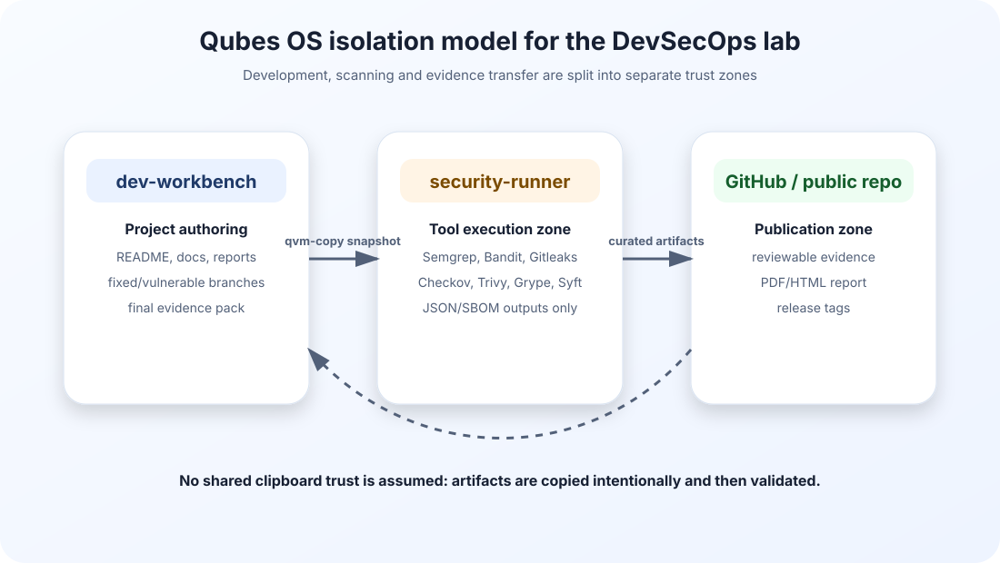
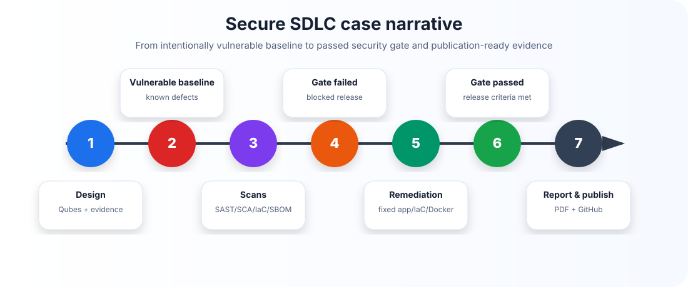
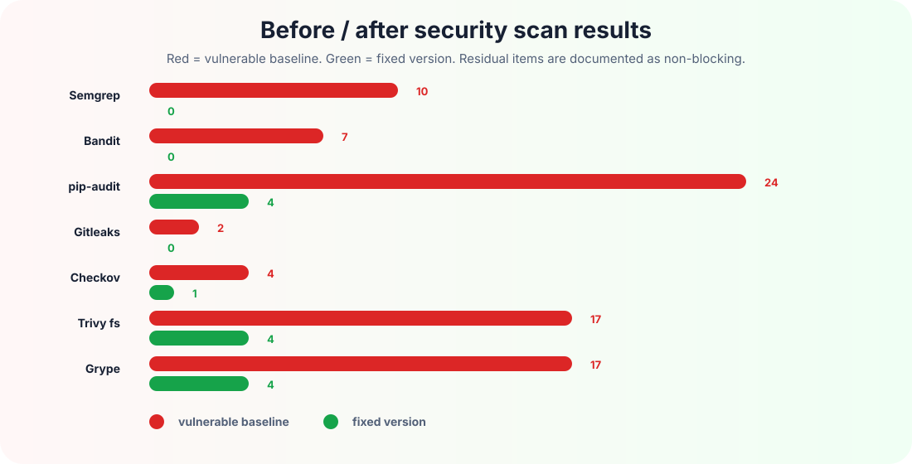
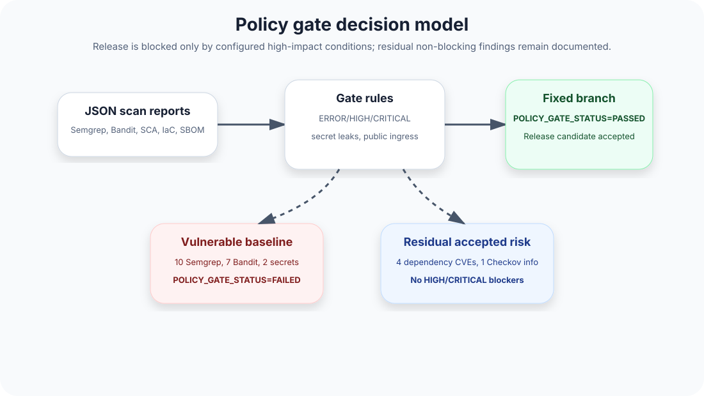
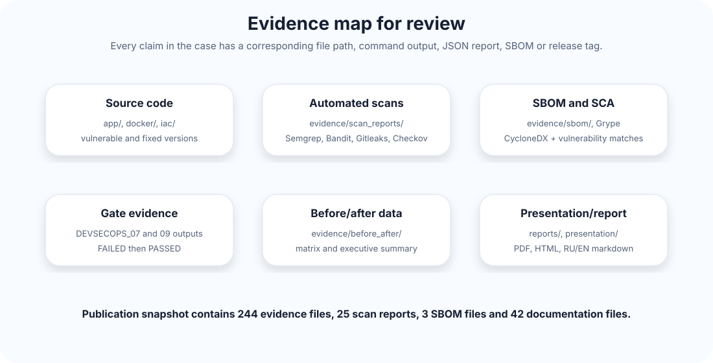

Qubes Secure SDLC / DevSecOps Lab — итоговый технический отчет
Статус: цель проекта достигнута.
Финальный результат: уязвимая версия демонстрирует провал security gate, исправленная версия проходит security gate и подготовлена к публикации на GitHub.
Среда: Qubes OS, разделение dev-workbench и security-runner, доказательная база в evidence/.
Главный вывод: проект показывает полный цикл Secure SDLC: проектирование, уязвимый baseline, автоматизированные проверки, блокирующий security gate, ремедиацию, повторную проверку, SBOM, evidence pack, отчет и презентацию.
1. Что проверять в первую очередь
| Что открыть | Где находится | Что доказывает |
|---|---|---|
| Главная страница проекта | README.md, README_RU.md, README_EN.md |
краткое описание, навигация, состав артефактов |
| Этот отчет | reports/devsecops_lab_report_ru.pdf и reports/devsecops_lab_report_ru.html |
полный разбор кейса, схемы, результаты, выводы |
| Английская версия | reports/devsecops_lab_report_en.pdf |
версия для портфолио и международной проверки |
| Презентация | presentation/devsecops_case_defense.html |
защита проекта в формате слайдов |
| Evidence inventory | evidence/EVIDENCE_INVENTORY.csv и evidence/EVIDENCE_SUMMARY.md |
перечень доказательств и контрольных файлов |
| Gate failed | evidence/command_outputs/DEVSECOPS_07_OUTPUT_policy_gate_failed.txt |
уязвимый baseline заблокирован |
| Gate passed | evidence/command_outputs/DEVSECOPS_09_OUTPUT_policy_gate_passed.txt |
исправленная версия допущена |
| Before/after | evidence/before_after/DEVSECOPS_09_BEFORE_AFTER_SECURITY_SUMMARY.csv |
сравнение до и после исправлений |
| Финальный аудит публикации | evidence/command_outputs/DEVSECOPS_13_OUTPUT_publication_completeness_audit.txt |
полнота проекта перед публикацией |
2. Архитектура Qubes OS
Проект построен не как обычная локальная папка с утилитами, а как изолированный лабораторный процесс. Разработка и документация выполняются в dev-workbench, тяжелые проверки и загрузка баз инструментов выполняются в security-runner, а результаты переносятся обратно как контролируемые артефакты.

Такой подход важен для DevSecOps-кейса: инструменты анализа получают доступ к исходному коду и скачивают внешние базы, но не смешиваются с основной рабочей средой. Это снижает риск случайного загрязнения проекта временными файлами, кэшами и сетевой активностью.
3. Secure SDLC сценарий
Кейс построен как история релиза: сначала создается заведомо уязвимый baseline, затем он проверяется набором security-инструментов, после чего gate блокирует релиз. Далее создается исправленная версия, повторяются проверки и фиксируется прохождение policy gate.

Ключевые фазы зафиксированы git-тегами:
| Тег | Смысл |
|---|---|
v1.0-vulnerable-baseline |
уязвимая версия приложения, Dockerfile и IaC |
v1.1-policy-gate-failed |
доказательство, что security gate блокирует baseline |
v1.2-remediation |
исправленная версия приложения, зависимостей, Dockerfile и IaC |
v1.3-policy-gate-passed |
доказательство прохождения gate после исправлений |
v1.4-evidence-pack |
инвентаризация и контрольные суммы evidence |
v1.5-report |
технический отчет |
v1.6-presentation |
презентационный пакет |
v1.7-publication-ready |
готовность к GitHub публикации |
v1.8-final-publication |
финальный publication-ready snapshot |
4. Что было уязвимым
В baseline намеренно заложены типовые проблемы, которые встречаются в реальных проектах:
| Область | Пример риска | Чем проверялось |
|---|---|---|
| Python application security | небезопасные паттерны в коде | Semgrep, Bandit |
| Secrets management | тестовые секреты в исходниках | Gitleaks |
| Dependency risk | уязвимые Python-зависимости | pip-audit, Trivy, Grype |
| Docker hardening | небезопасная контейнерная конфигурация | Trivy Dockerfile |
| Infrastructure as Code | небезопасный ingress и слабые настройки | Checkov, Trivy IaC |
| Supply chain evidence | отсутствие формализованного состава компонентов | Syft SBOM, Grype |
Важно: секреты в проекте являются демонстрационными, но они специально детектируются Gitleaks как настоящая категория риска. Это делает кейс ближе к реальному DevSecOps-процессу.
5. Результаты до и после

| Инструмент | Baseline | Fixed | Итог |
|---|---|---|---|
| Semgrep SAST | 10 | 0 | 0 ERROR после исправления |
| Bandit Python SAST | 7 | 0 | 0 HIGH после исправления |
| pip-audit SCA | 24 | 4 | 4 residual, не gate-blocking |
| Gitleaks secrets | 2 | 0 | секреты устранены |
| Checkov IaC | 4 | 1 | 1 residual CKV2_AWS_5 |
| Trivy fs | 17 | 4 | 0 HIGH/CRITICAL |
| Grype SBOM | 17 | 4 | 0 HIGH/CRITICAL |
Дополнительно зафиксированы gate-relevant counters:
| Gate condition | Baseline | Fixed |
|---|---|---|
| Semgrep ERROR | 5 | 0 |
| Bandit HIGH | 2 | 0 |
| Gitleaks findings | 2 | 0 |
| Trivy fs HIGH/CRITICAL | 6 | 0 |
| Trivy Dockerfile HIGH/CRITICAL | 1 | 0 |
| Grype HIGH/CRITICAL | 6 | 0 |
6. Policy gate
Policy gate не просто собирает отчеты. Он принимает решение о выпуске на основании заранее определенных блокирующих условий. Именно это отличает проект от простого набора сканов.

В baseline зафиксирован ожидаемый результат:
POLICY_GATE_STATUS=FAILED
После ремедиации зафиксирован ожидаемый результат:
POLICY_GATE_STATUS=PASSED
Остаточные findings не скрыты. Они явно описаны как non-blocking residual risk:
| Остаточный пункт | Значение | Почему не блокирует релиз |
|---|---|---|
| pip-audit total vulnerabilities | 4 | нет настроенного HIGH/CRITICAL gate blocker в финальной политике |
| Checkov failed checks | 1 | CKV2_AWS_5: security group не прикреплена к ресурсу в учебном IaC-модуле |
Public ingress 0.0.0.0/0 |
0 | главный сетевой IaC-риск устранен |
| Grype HIGH/CRITICAL | 0 | high-impact SBOM-риск отсутствует |
7. Evidence map
Проект содержит не только итоговый текст, но и проверяемую доказательную базу: командные выводы, JSON-отчеты, SBOM, before/after CSV, скриншоты и контрольные суммы.

Финальный контроль публикации зафиксировал:
| Категория | Количество |
|---|---|
| Evidence files | 244 |
| Scan report files | 25 |
| SBOM files | 3 |
| Report files | 11 |
| Documentation files | 42 |
8. Почему проект соответствует заявленной цели
Целью было построить сильный portfolio-ready Secure SDLC / DevSecOps кейс в Qubes OS. По итогам работы достигнуты все ключевые результаты:
| Требование | Статус | Доказательство |
|---|---|---|
| Разделение рабочих зон | выполнено | dev-workbench и security-runner, qvm-copy evidence |
| Уязвимый baseline | выполнено | app/vulnerable-version, docker/vulnerable.Dockerfile, iac/vulnerable |
| Исправленная версия | выполнено | app/fixed-version, docker/fixed.Dockerfile, iac/fixed |
| Автоматизированные security scans | выполнено | evidence/scan_reports/ |
| SBOM | выполнено | evidence/sbom/DEVSECOPS_09_SBOM_fixed_syft_cyclonedx.json |
| Failed gate | выполнено | POLICY_GATE_STATUS=FAILED |
| Passed gate | выполнено | POLICY_GATE_STATUS=PASSED |
| Before/after comparison | выполнено | evidence/before_after/ |
| Отчет и презентация | выполнено | reports/, presentation/ |
| GitHub publication readiness | выполнено | GITHUB_PUBLICATION_NOTE.md, RELEASE_CHECKLIST.md, release tags |
9. Ограничения и честная оценка
Проект является учебно-лабораторным, поэтому часть infrastructure objects не разворачивается в реальном AWS-аккаунте. Это сделано сознательно: цель проекта — показать Secure SDLC, evidence discipline и gate logic, а не эксплуатацию production-инфраструктуры.
Residual findings сохранены в отчетах, а не удалены из истории. Это сильная сторона кейса: он показывает не только «зеленую картинку», но и зрелое разделение между blocking и non-blocking risks.
10. Итог
Проект готов к проверке и публикации. Он демонстрирует полный путь от уязвимого baseline до исправленной версии с пройденным security gate, содержит проверяемые артефакты, визуальный отчет, презентацию и понятную навигацию для преподавателя или рекрутера.
Ответ на главный вопрос: да, цель задания достигнута.